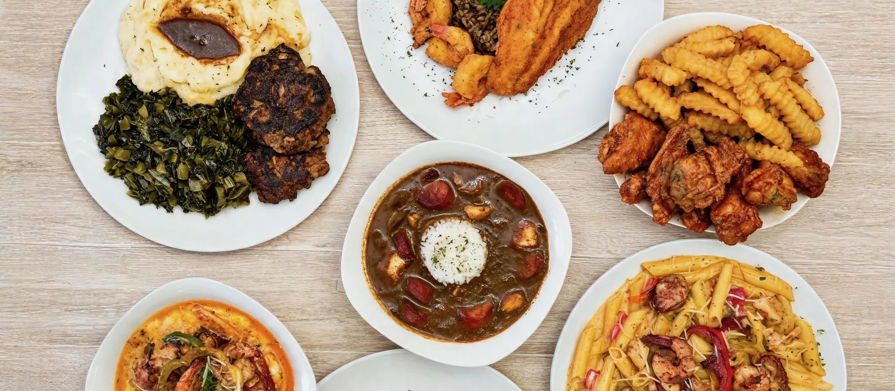
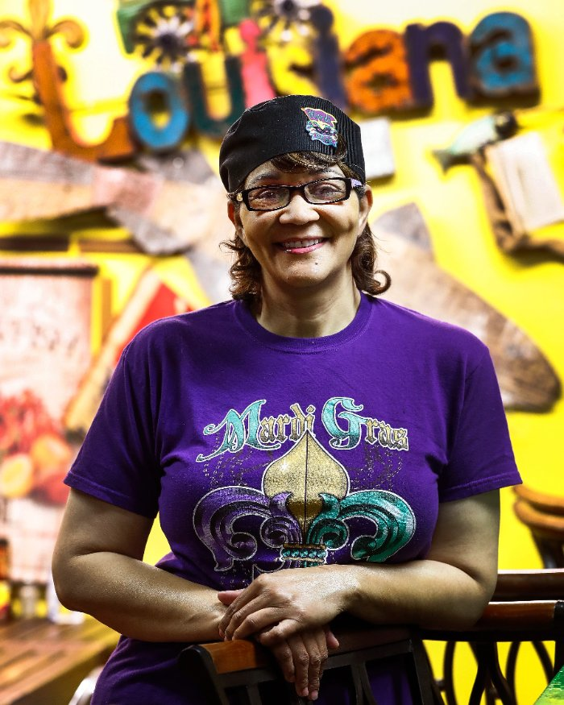

Short answer: Bayou Fork Kitchen is a new Cajun, Creole and Southern comfort food restaurant at 10600 Fondren Road, Houston, TX 77096, in Southwest Houston. We opened in September 2026 with breakfast from 6:30am, a drive-thru, pickup, delivery and catering. Owner Penny and her son, executive chef Blake, bring the experience of the family’s former Memphis restaurant to a new Houston kitchen.
If you are looking for a new restaurant in Houston or trying Bayou Fork for the first time, this guide covers what makes the kitchen different, what to order, what it costs, and how to get it.
A new Houston restaurant with an experienced family behind it
Bayou Fork Kitchen may be new to Fondren Road, but it is not the family’s first kitchen. Penny and Blake opened Mardi Gras Memphis in 2015, later operated the French Quarter Food Truck and The Quarter Kitchen + Bar, and brought that experience to Southwest Houston. Blake trained in fine dining at Emeril’s and has cooked professionally for eleven years.
The Houston restaurant combines plated Cajun and Creole food with the convenience of a neighborhood drive-thru. You can stop for a breakfast taco on the way to work, pick up gumbo or étouffée for dinner, order a seafood platter for the family, or ask the catering team to plan food for a larger group.
Bayou Fork Kitchen at a glance
- Opened: September 2026.
- Food: Cajun, Creole and Southern comfort food. Gumbo, étouffée, shrimp and grits, Mardi Gras Pasta, fried seafood platters, wings, po-boys and breakfast.
- Address: 10600 Fondren Road, Houston, TX 77096. We are in the Brays Oaks area of Southwest Houston, on Fondren between South Braeswood Boulevard and West Bellfort, about a mile west of Hillcroft Avenue.
- Hours: Monday through Saturday, 6:30am to 7:30pm. Closed Sunday.
- How to order: Drive-thru (open all service hours), pickup or delivery through DoorDash, or call (832) 992-7335.
- Prices: Breakfast starts at $3.50. Plates with a listed price run from $10 (Sweet Heat Wings) to $17 (Catfish Bienville). Prices match our DoorDash menu and may change.
- Catering: Houston, Southwest Houston, Manvel, Pearland, Missouri City and Sugar Land. Request a quote.
- Google rating: 5.0 stars from 46 reviews, as of October 20, 2026.
- Email: bayoufork@gmail.com
Who is behind the kitchen
Bayou Fork Kitchen is a family business. In 2015, Penny, then a senior executive, and her son Blake turned a corner store in Memphis, Tennessee into a full-service restaurant and bar. Mardi Gras Memphis opened on July 5, 2015, and ran on one motto: “amazing service to every customer, every time.”
After seven years in Memphis, the family moved back south to be closer to family. They launched the French Quarter Food Truck, then The Quarter Kitchen + Bar. In September 2026 they opened Bayou Fork Kitchen on Fondren Road. Blake trained in fine dining at Emeril’s and has cooked professionally for eleven years. He runs the line and builds the menu. Penny runs the business. You can read the full story on our About page.

What kind of food is it?
Louisiana Cajun and Creole cooking, plus Southern comfort plates. There are no handed-down recipe cards here. Everything is our own recipe, and everything starts with butter melting in a pot or oil in the fryer. The seasoning is layered through the whole dish instead of shaken on at the end.
One thing to know if you are coming from Houston’s seafood boil scene: we are not a Viet-Cajun boil spot. We serve plated Louisiana food like gumbo, étouffée and fried platters with sides. Here is how the two styles differ, and here is the difference between Cajun and Creole.
Why try this new Southwest Houston restaurant?
- A broad menu: breakfast, po-boys, wings, pasta, gumbo, étouffée, shrimp and grits, seafood platters and Southern sides are all available from one kitchen.
- Neighborhood convenience: the Fondren Road drive-thru is open during every service hour, and pickup and delivery are available through DoorDash.
- Food for groups: family meals, party trays and full catering make the same menu available for office lunches, birthdays, weddings and private events.
- Early opening: breakfast starts at 6:30am Monday through Saturday, with tacos, croissants, chicken and waffles, the Bayou Breakfast, and shrimp and grits.
- Local response: the restaurant reached 46 five-star Google reviews by October 20, 2026.
What to order on your first visit
- For the Louisiana classics: the Gumbo, a dark-roux gumbo with seafood and sausage over rice, or the Crawfish Étouffée. Add dirty rice as your side.
- For the house signature: the Big Daddy, our signature platter and the plate most first-time customers ask about by name.
- For something creamy: Mardi Gras Pasta ($16), Shrimp & Grits ($15) or Catfish Bienville ($17).
- For something fried: Fried Catfish & Shrimp ($16), Sweet Heat Wings ($10) or the Fried Shrimp Po-Boy.
- For breakfast: breakfast tacos ($3.50), the Bayou Breakfast ($10) or chicken and waffles ($14), from 6:30am. See our breakfast guide.
Every platter comes with one side. Choose from dirty rice, mac and cheese, fries, greens, green beans, corn, mashed potatoes, veggie medley and baked beans. The full menu has everything else, including Fried Ribs, Red Beans & Sausage and the Meatloaf Plate.
How ordering works
- Drive-thru: open every hour we are, 6:30am to 7:30pm, Monday through Saturday.
- Pickup and delivery: order on DoorDash. Delivery and service fees are set by DoorDash at checkout, and delivery depends on whether your address is in DoorDash’s range of our kitchen.
- By phone: call the kitchen at (832) 992-7335.
- Big orders: give us at least one day’s notice. For events, use the catering form and we will build a quote around your guest count.
Where we are
Bayou Fork Kitchen is at 10600 Fondren Road in ZIP code 77096. That is the Brays Oaks area of Southwest Houston, on Fondren between South Braeswood Boulevard and West Bellfort, about a mile west of Hillcroft Avenue. Westbury, Meyerland and Sharpstown are a short drive away. Get directions on Google Maps.
What customers say
Bayou Fork Kitchen is rated 5.0 on Google, with 46 five-star reviews as of October 20, 2026. Recent reviewers highlighted catered food for a group, Creole dishes they called a must-try, and food, service and atmosphere scores of 5/5. Another said the meal was a 10/10 and the service was excellent.
Tried us already? Leave us a Google review. It helps other people in Southwest Houston find us.
Food writers, restaurant reviewers and local creators can also use our Houston food media guide to arrange a visit, tasting or interview.
FAQ: Bayou Fork Kitchen
What is Bayou Fork Kitchen?
Bayou Fork Kitchen is a Cajun, Creole and Southern comfort food restaurant at 10600 Fondren Road, Houston, TX 77096, in Southwest Houston. It offers a drive-thru, pickup and delivery through DoorDash.
Who owns Bayou Fork Kitchen?
Bayou Fork Kitchen is owned and run by Penny, with her son Blake as executive chef. The family previously ran Mardi Gras Memphis, the French Quarter Food Truck and The Quarter Kitchen + Bar.
Is Bayou Fork Kitchen a new restaurant?
Yes. Bayou Fork Kitchen opened at 10600 Fondren Road in Southwest Houston in September 2026. It is the newest kitchen from the family behind Mardi Gras Memphis, which opened in Memphis, Tennessee in 2015.
What should I order at Bayou Fork Kitchen the first time?
For Louisiana classics, order the Gumbo or Crawfish Étouffée. For the house signature, get the Big Daddy. For something creamy, try the Mardi Gras Pasta or Shrimp & Grits.
Does Bayou Fork Kitchen have a drive-thru?
Yes. The drive-thru at 10600 Fondren Road is open all service hours, 6:30am to 7:30pm, Monday through Saturday.
How much does it cost to eat at Bayou Fork Kitchen?
Breakfast starts at $3.50 for breakfast tacos. Plates with a listed price run from $10 for Sweet Heat Wings to $17 for Catfish Bienville. Prices match our DoorDash menu and may change.
Is Bayou Fork Kitchen open on Sunday?
No. Bayou Fork Kitchen is open Monday through Saturday, 6:30am to 7:30pm, and closed on Sunday.